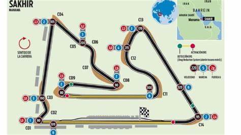

Pistas donde se Correrán a lo Largo del Año
Inicio
Pilotos
Pistas
Posiciones
Seleccione La pista a Analizar:
Gran Premio de Baréin (Circuito Internacional de Baréin)
Gran Premio de Arabia Saudita (Circuito de la Corniche de Yeda)
Gran Premio de Australia (Circuito de Albert Park)
Gran Premio de Emilia-Romaña (Autódromo Enzo e Dino Ferrari, Imola)
Gran Premio de España (Circuit de Barcelona-Catalunya)
Gran Premio de Mónaco (Circuito de Mónaco)
Descripción de la pista:
